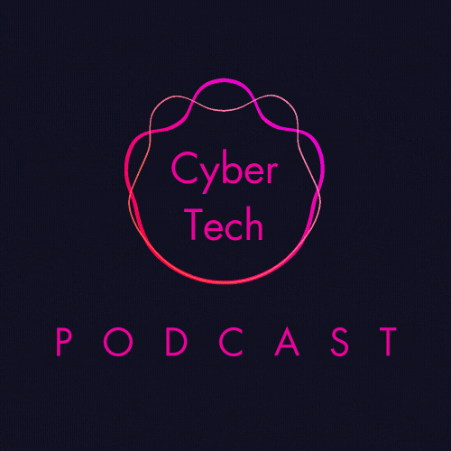

CyberTech Podcast
Apresentado por Anna Lara e Lucas de Matos, o Cybertech Podcast é o seu espaço para explorar as grandes questões
do mundo da tecnologia. Vamos além das manchetes para discutir inovação, inteligência artificial, código aberto,
privacidade digital, a influência das big techs e muito mais. Sem filtros, sem enrolação – apenas discussões profundas
e provocativas sobre o presente e o futuro da tecnologia.
Voltar para o Portifólio